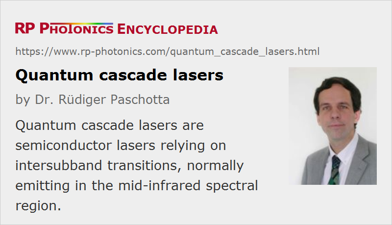

Quantum Cascade Lasers
Acronym: QCL
Definition: semiconductor lasers relying on intersubband transitions, normally emitting in the mid-infrared spectral region
More general terms: semiconductor lasers, mid-infrared laser sources, terahertz sources
German: Quantenkaskadenlaser
Categories: optoelectronics, lasers
How to cite the article; suggest additional literature
Author: Dr. Rüdiger Paschotta
The quantum cascade laser is a special kind of semiconductor laser, usually emitting mid-infrared light. Such a laser operates on laser transitions not between different electronic bands but on intersubband transitions of a semiconductor structure. Figure 1 shows what happens to an electron injected into the gain region: in each period of the structure, it undergoes a first transition (blue arrow) between two sublevels of a quantum well (which is the laser transition on which stimulated emission occurs), then a non-radiative transition (red arrow) to the lowest sublevel, before tunneling (gray arrow) into the upper level of the next quantum well. By using several tens or even 100 quantum wells in a series (a cascade), a higher optical gain and multiple photons per electron are obtained at the expense of a higher required electrical voltage. The operation voltage can easily be of the order of 10 V, whereas few volts are sufficient for ordinary laser diodes.
As the transition energies are defined not by fixed material properties but rather by design parameters (particularly by layer thickness values of quantum wells), quantum cascade lasers can be designed for operating wavelengths ranging from a few microns to well above 10 μm, or even in the terahertz region.
In a quantum cascade laser, the mentioned quantum well structure is embedded in a waveguide, and the laser resonator is mostly of DBR or DFB type. There are also external-cavity lasers, where a wavelength tuning element such as a diffraction grating is part of the resonator.
Whereas continuously operating room-temperature devices [4] are normally limited to moderate output power levels in the milliwatt region (although more than a watt is possible), multiple watts are easily possible with liquid-nitrogen cooling. Even at room temperature, watt-level peak powers are possible when using short pump pulses.
The power conversion efficiency of quantum cascade lasers is typically of the order of a few tens of percent. Recently, however, devices with efficiencies around 50% have been demonstrated [9, 10], although only for cryogenic operation conditions.
Most quantum cascade lasers emit mid-infrared light. However, quantum cascade lasers can also be made for generating terahertz waves (→ terahertz sources). Such devices constitute very compact and simple sources of terahertz radiation. Recently, even room temperature terahertz generation has been achieved via internal difference frequency generation [11].
Perhaps the most important applications for quantum cascade lasers will be in the area of laser absorption spectroscopy of trace gases, e.g. for detecting very small concentrations of pollutants in air. In addition to the suitable wavelength range, QCLs usually feature a relatively narrow linewidth and good wavelength tunability, making them very suitable for such applications.
Suppliers
The RP Photonics Buyer's Guide contains 25 suppliers for quantum cascade lasers. Among them:
Questions and Comments from Users
Here you can submit questions and comments. As far as they get accepted by the author, they will appear above this paragraph together with the author’s answer. The author will decide on acceptance based on certain criteria. Essentially, the issue must be of sufficiently broad interest.
Please do not enter personal data here; we would otherwise delete it soon. (See also our privacy declaration.) If you wish to receive personal feedback or consultancy from the author, please contact him e.g. via e-mail.
By submitting the information, you give your consent to the potential publication of your inputs on our website according to our rules. (If you later retract your consent, we will delete those inputs.) As your inputs are first reviewed by the author, they may be published with some delay.
Bibliography
| [1] | R. F. Kazarinov et al., “Possibility of amplification of electromagnetic waves in a semiconductor with a superlattice”, Fiz. Tekh. Poluprovod. 5 (4), 797 (1971) |
| [2] | J. Faist et al., “Quantum cascade laser”, Science 264, 553 (1994), doi:10.1126/science.264.5158.553 |
| [3] | R. M. Williams et al., “Kilohertz linewidth from frequency-stabilized mid-infrared quantum cascade lasers”, Opt. Lett. 24 (24), 1844 (1999), doi:10.1364/OL.24.001844 |
| [4] | M. Beck et al., “Continuous wave operation of a mid-infrared semiconductor laser at room temperature”, Science 295, 301 (2002), doi:10.1126/science.1066408 |
| [5] | R. Köhler et al., “Terahertz semiconductor-heterostructure laser”, Nature 417, 156 (2002), doi:10.1038/417156a |
| [6] | B. S. Williams et al., “Operation of terahertz quantum-cascade lasers at 164 K in pulsed mode and at 117 K in continuous-wave mode”, Opt. Express 13 (9), 3331 (2005), doi:10.1364/OPEX.13.003331 |
| [7] | B. S. Williams, “Terahertz quantum-cascade lasers”, Nature Photon. 1, 517 (2007), doi:10.1038/nphoton.2007.166 |
| [8] | A. Kosterev et al., “Application of quantum cascade lasers to trace gas analysis”, Appl. Phys. B 90, 165 (2008), doi:10.1007/s00340-007-2846-9 |
| [9] | P. Q. Liu et al., “Highly power-efficient quantum cascade lasers”, Nature Photon. 4, 95 (2010), doi:10.1038/nphoton.2009.262 |
| [10] | Y. Bai et al., “Quantum cascade lasers that emit more light than heat”, Nature Photon. 4, 99 (2010), doi:10.1038/nphoton.2009.263 |
| [11] | M. A. Belkin et al., “Room temperature terahertz quantum cascade laser source based on intracavity difference-frequency generation”, Appl. Phys. Lett. 92 (20), 201101 (2008), doi:10.1063/1.2919051 |
| [12] | G. Scalari et al., “THz and sub-THz quantum cascade lasers”, Laser & Photon. Rev. 3 (1-2), 45 (2009), doi:10.1002/lpor.200810030 |
| [13] | F. Capasso, “High-performance midinfrared quantum cascade lasers” (review article, open access), Opt. Eng. 49 (11), 111102 (2010), doi:10.1117/1.3505844 |
| [14] | S. Kumar, “Recent progress in terahertz quantum cascade lasers”, J. Sel. Top. Quantum Electron. 17 (1), 38 (2011), doi:10.1109/JSTQE.2010.2049735 |
| [15] | C. Sirtori, “Wave engineering with THz quantum cascade lasers”, Nature Photon. 7, 691 (2013), doi:10.1038/nphoton.2013.208 |
| [16] | M. S. Vitiello et al., “Quantum cascade lasers: 20 years of challenges”, Opt. Express 23 (4), 5167 (2015), doi:10.1364/OE.23.005167 |
See also: semiconductor lasers, infrared light, mid-infrared laser sources, terahertz sources, spectroscopy
and other articles in the categories optoelectronics, lasers
|  |
If you like this page, please share the link with your friends and colleagues, e.g. via social media:
These sharing buttons are implemented in a privacy-friendly way!